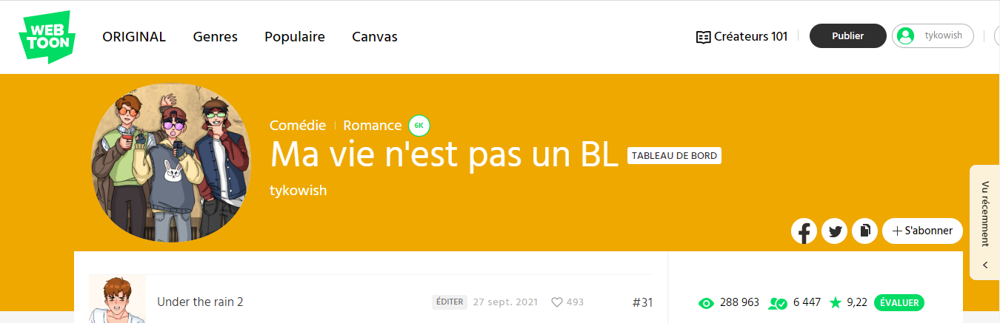

Ma vie n'est pas un BL
À travers mes illustrations, je cherche à capturer l'essence d'un sujet, à transmettre des émotions et à raconter des histoires visuellement. C'est pour cette raison que je publie certaines de mes créations sur ma page Instagram ou sur webtoon, dans l'espoir de partager mes récits mais aussi de voir des sourires. Je dessine depuis longtemps et j'utilise à présent de nouveaux logiciels de dessins : Photoshop, Illustrator, Ibis Paint et même Clip Studio .

Un de mes projets qui a le plus touché un grand nombre de gens est actuellement un projet LGBTQ+.
Étant une personne ouverte d'esprit j'ai crée ce projet humoristique pour encourager cette cause et l'avancement de l'équité pour tous.
Vous pouvez consulter mon Webtoon sur cette page : Webtoon
The case of Build Jakapan
Je fais depuis quelques années du montage vidéo pour ma chaîne youtube. Je garde le même style de contenu : des résumés humoristiques de séries plus ou moins connus.
Exceptionnellement, dans un cadre informatif, j'ai creé une vidéo de quelques minutes expliquant un évenement qui m'a beaucoup marqué. Il s'agit du projet le plus important
de toute ma chaîne. Il m'a demandé beaucoup de recherches, de réflexions et de montage devenant à la fin le projet dont je suis la plus fière.
Dans le domaine de l'audiovisuel j'ai fais en plus d'autres compositions.
Ayant apparemment une voix de doubleuse, il m'arrive parfois de faire du doublage pour le plaisir (voir un extrait ci-dessous).
Aussi, il y a quelques années de cela, j'avais eu la chance de pratiquer de l'animation 2D sur logiciel. Même si je n'ai pas pratiqué depuis, j'ai encore le sens de l'animation et mes compétences sur ce sujet. Ainsi, faire une animation sur Photoshop ou After Effect ne me semblent pas compliqués.
Cases with Mr.Joy Yes
M'intéressant aussi aux jeux interactifs j'ai crée mon premier jeu pour l'instant en cours.
Il s'agit d'un jeu de détéctive un peu rétro où l'on suit les aventures d'une nouvelle stagiaire dans un bureau d'enquête. Pour créer ce jeu j'ai dû faire de nombreuses recherches pour diversifier
le système de choix du personnage et les codes. Tout de ce projet, mis à part sa mise en page, a été entièrement créé par moi (image, audio, background etc.).